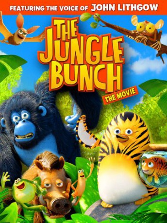

gesehen am 09.10.2017
gesehen am 09.10.2017Alternativ: The Jungle Bunch: The Movie (Englischer Titel) gesehen am 09.10.2017
 
 IMDB-Wertung: 5.3 / 10
IMDB-Wertung: 5.3 / 10  Metascore:
Metascore: 
At the South Pole, the walruses install a rule of terror for the penguins. Tommy and his sister travel to the Equator, where legend says a jungle 'penguin warrior' and his six companions live, who can come rescue them. Tiger-striped bird 'tiger' Maurice is flattered and accepts the task. After recruiting gorilla Miguel, warthog Fred, frogs Bob and Al plus tarsier Gilbert, they set out. On the way they meet and recruit bat Batricia. After a long journey, they arrive in Antarctica and take on the giant bullies.
Jahr: 2011
Dauer: 54 Minuten
FSK: 0
Land: Frankreich Studio: Universal PicturesTonspuren: DTS - ,
Untertitel:
Auflösung: 1080p (1920x1080) Größe: 3317 MB
Genre: Abenteuer, Animation/Trick, Familie
Regisseur: David Alaux, Eric Tosti
Drehbuch: David Alaux
Soundtrack:
Darsteller:
 Jean-Philippe Puymartin als Snake
Jean-Philippe Puymartin als SnakeDatei: X:\Kinder Collections\Dschungelhelden\Dschungelhelden - Operation Südpol, Die (2011, FSK0, 1920x1080).mkv seit 09.10.2017
Festplatte: Kinder-Filme+Trick
 Alle Filme aus Gruppe 'Kinder Collections\Dschungelhelden'
Alle Filme aus Gruppe 'Kinder Collections\Dschungelhelden'